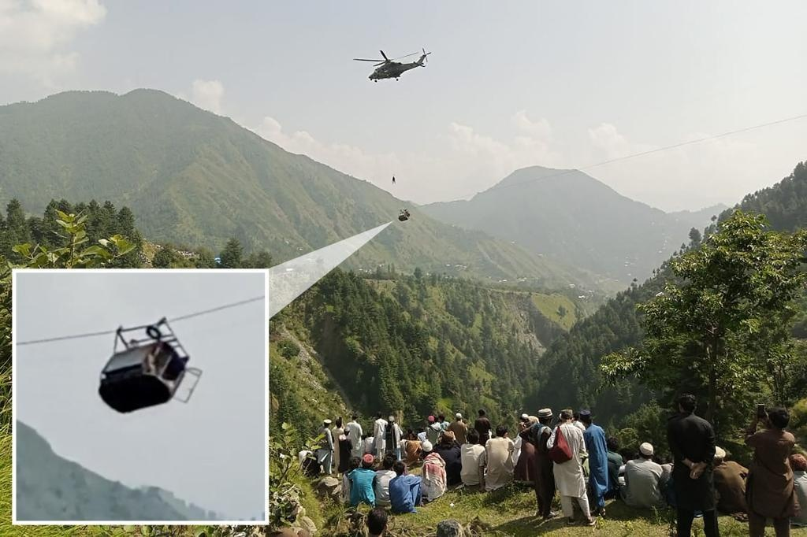

Six kids, two teachers stuck in cable car 900ft above ravine in PakistanSeven schoolkids and one teacher were miraculously rescued Tuesday from a cable car dangling 900 feet high — nearly 16 hours after the cord suddenly snapped above a ravine in Pakistan. The group first got stuck at 7 a.m. local time when one of the cables on the gondola taking them to school in mountainous Battagram broke. The “extremely risky” rescue operation — involving military commandos being winched down from helicopters in dangerously high winds — continued nearly all day before officials finally announced its successful completion. “All the kids have been successfully and safely rescued,” Caretaker Prime Minister Anwaar-ul-Haq Kakar tweeted triumphantly just before midnight. “Great teamwork by the military, rescue departments, district administration as well as the local people.” Several of the students and their parents burst into tears when they were finally reunited, according to local senior police officer Nazir Ahmed. “Everyone was praying for this moment,” he said. The miraculous rescue started when the group was stranded when the cable suddenly gave way and left the conveyance suspended on an angle 900 feet above the ground. The first two students were rescued late Tuesday afternoon, with local TV showing one of the children being lifted off the cable car by a helicopter in a harness and then carried to the ground. The helicopter operation was then suspended due to ongoing heavy winds and darkness, before another three were evacuated thanks to a ground operation. By nightfall, floodlights, extra cables, and other ground-based equipment were installed to aid the ongoing effort. “It is a slow and risky operation,” local resident Abdul Nasir Khan said. “One person needs to tie himself with a rope and he will go in a small chairlift and rescue them one by one.” One video shared by a rescue agency shows locals and rescuers shouting “God is great” when one of the students is safely pulled to the hillside using a harness. The final two students and the teacher were rescued using the makeshift cable system. The chairlift was transporting the group to Batangi Government High School in the mountainous Battagram area when the incident occurred. “One child has fainted due to heat and fear,” rescue official Shariq Riaz Khattak said earlier on Tuesday. The students were all between 10 and 16 years old, with one who fainted also having a heart condition, the 20-year-old teacher, only identified as Gulfraz, told Geo News by phone. “For God’s sake, help us,” the instructor pleaded. The “extremely risky” helicopter operation had been hampered by high winds — as well as the fear that the helicopter blades could sever the remaining cable. Chairlifts are a common method of transportation in the area. “The chairlift is used to go from one place to another. In this area, 150 children come to school by chairlift,” another local teacher told Geo News. Hours after news of the accident broke, Caretaker Prime Minister Anwaar-ul-Haq Kakar called the news “really alarming.” “I have directed the NDMA, PDMA [the provincial equivalent of the NDMA], and district authorities to urgently ensure safe rescue and evacuation of the 8 people stuck in the chairlift … I have also directed the authorities to conduct safety inspections of all such private chairlifts and ensure that they are safe to operate and use,” he tweeted. With Post wires Pakistan’s military managed to rescue seven schoolkids and one teacher Tuesday. Reuters/Pakistan Rescue Military Youngsters, who were trapped in a broken cable car, received first aid following their rescue. AP The group got stranded when one of the cables on the gondola taking them to school in mountainous Battagram suddenly snapped. AP/ Nasir Mahmood “The chairlift is used to go from one place to another. In this area, 150 children come to school by chairlift,” another teacher told Geo News. AP People watch as an soldier rappels from a helicopter during a rescue mission Tuesday. AFP via Getty Images The group has been stuck for over nine hours. UMEED SAHAR via REUTERS A military officer delivered food, water and medicine to the group. AFP via Getty Images |
 |